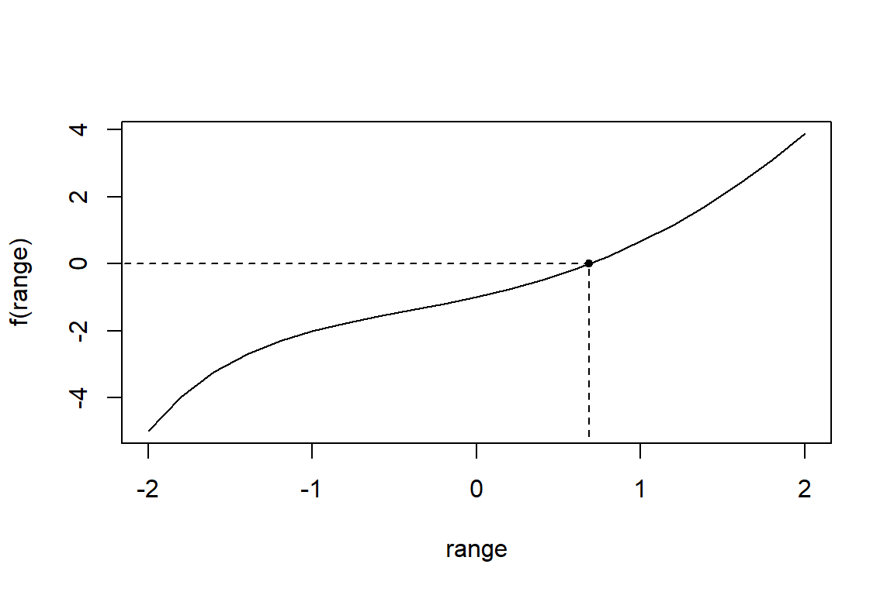
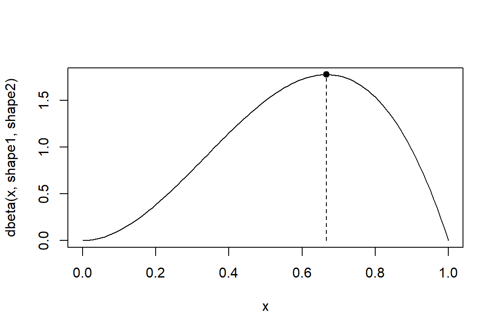

9 Optimization in R
Actuaries often write functions (e.g. a likelihood) that have to be optimized. Here you’ll get to know some R functionalities to do optimization.
9.1 Find the root of a function
Consider the function \(f: x \mapsto x^2-3^{-x}\). What is the root of this function over the interval \([0,1]\)?
$root
[1] 0.68602
$f.root
[1] -8.0827e-06
$iter
[1] 4
$init.it
[1] NA
$estim.prec
[1] 6.1035e-05? uniroot
# in more lines of code
f <- function(x){
x^2-3^(-x)
}
# calculate root
opt <- uniroot(f, lower=0, upper=1)
# check arguments
names(opt)[1] "root" "f.root" "iter" "init.it" "estim.prec"[1] -8.0827e-06# visualize the function
range <- seq(-2, 2, by=0.2)
plot(range, f(range), type="l")
points(opt$root, f(opt$root), pch=20)
segments(opt$root, -7, opt$root, 0, lty=2)
segments(-3, 0, opt$root, 0, lty=2)
9.2 Find the maximum of a function
You look for the maximum of the beta density with a given set of parameters.
# visualize the density
shape1 <- 3
shape2 <- 2
x <- seq(from=0, to=1, by=0.01)
curve(dbeta(x,shape1,shape2), xlim=range(x))
opt_beta <- optimize(dbeta, interval=c(0,1), maximum=TRUE, shape1, shape2)
points(opt_beta$maximum, opt_beta$objective, pch=20, cex=1.5)
segments(opt_beta$maximum, 0, opt_beta$maximum, opt_beta$objective, lty=2)
9.3 Do Maximum Likelihood Estimation (MLE)
nsim <- 10000
x <- rgamma(nsim, shape=3, rate=1.5)
# calculate log-likelihood
f <- function(p,x){
-sum(dgamma(x, shape=p[1], rate=p[2], log=TRUE))
}
nlm(f, c(1, 1), x=x)Warning in dgamma(x, shape = p[1], rate = p[2], log = TRUE): NaNs producedWarning in nlm(f, c(1, 1), x = x): NA/Inf replaced by maximum positive valueWarning in dgamma(x, shape = p[1], rate = p[2], log = TRUE): NaNs producedWarning in nlm(f, c(1, 1), x = x): NA/Inf replaced by maximum positive valueWarning in dgamma(x, shape = p[1], rate = p[2], log = TRUE): NaNs producedWarning in nlm(f, c(1, 1), x = x): NA/Inf replaced by maximum positive value$minimum
[1] 14407
$estimate
[1] 2.9792 1.4956
$gradient
[1] -0.0024856 0.0026648
$code
[1] 1
$iterations
[1] 14$par
[1] 2.9790 1.4953
$value
[1] 14407
$counts
function gradient
67 NA
$convergence
[1] 0
$message
NULL